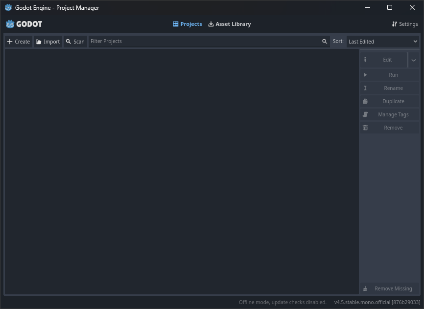
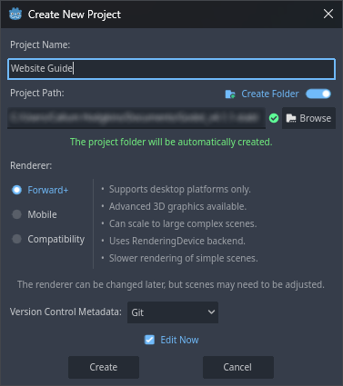
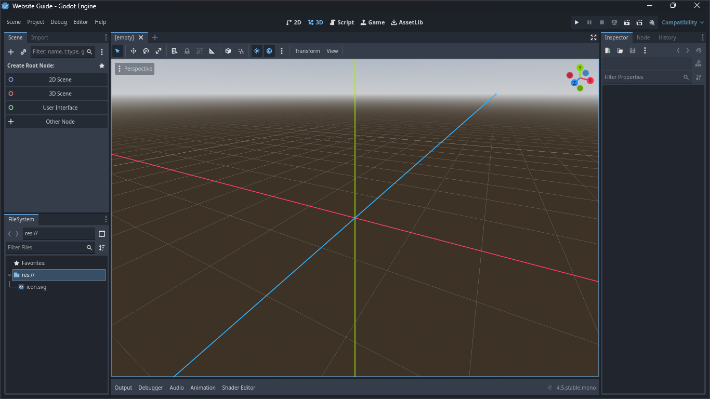
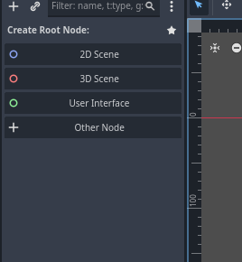

Getting Started with Godot
These guides use Godot 4.5, this guide may not work with other versions of the engine.
This project will be a simple 2D platformer, the guide will go in-depth about everything you do and explain what you're actually doing.
So, opening Godot for the first time and every consecutive time after that will give you this screen, or something similar to it.

(It may look slightly off and that's because I had to modify the image to remove the projects I already have)
This is the

(If you're like me then you'll understand how annoying it is to name projects you haven't made yet, on my usual projects I usually just give them random names that are vagely similar to what I want to do. Some of my professional projects have names like "codering". For this I'm just calling it "Website Guide" but the project name doesn't really have any bearing on the actual project and it can be renamed later.)
After setting the project name, set the project path to a place that's useful and reasonable, it's good to create a "
The next section below the path isn't really relevant for this guide but I'll explain it anyways. The
The "
The "
The "
This project will be simple and I intend to place the finished project in this website, so I'll use the "
The final section is the "
(Also check "
And with the settings set, you can now press "

After waiting for the project to load, you will be met with a view similar to this. You'll probably be automatically placed into the 3D view, but this project will be 2D so switch to the
First, starting on the left side of the screen at the top, there's the
Underneath it is the
On the right side of the screen is the inspector, when you have a game object selected, it will display all information about that game object, like it's postition, rotation and scale for example.
You may have noticed that there are more tabs at the top of each of the mini windows, we'll get into those later.

Since we are making a 2D game, you'll want to select "